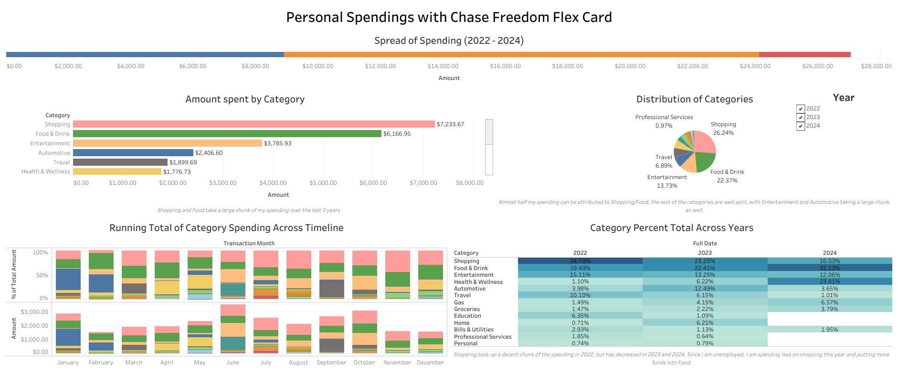

June 20th, 2024
Personal Spending Analysis
Utilizing Excel, Power Query, R and Tableau to visually and statistically analyze my personal spending behavior.

This project was a personal interest of mine to complete over the summer semester. Chase lets consumers download their own spending data in csv
format; I used this to learn more functionalities within Excel, R and Tableau. I first used Power Query to transform and clean the data, then created
Pivot Tables and other visuals to get a basis of the data. With R I used visuals such as histograms, boxplots and bar charts to generate more analysis
and finally created linear regression models to investigate trends across months, years and categories. I then exported the data to Tableau to create a dashboard
summarizing the data. I've written a Medium article post on the project here.
The dashboard is also publically available on Tableau Public.
And you can also see the R code on this Github Link.